Markdown テキスト形式
Markdown の段落には特別な書式はありません。テキストをそのまま記述するだけでOKです。段落の改行は、2つ以上のスペースに加えて Enter キーを使用します。。
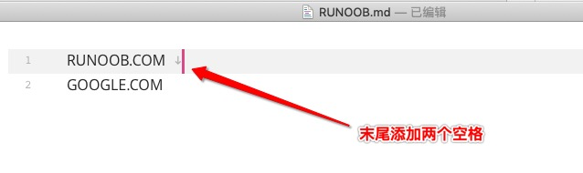
もちろん、段落の後に空行を1つ使用して、新しい段落を開始することもできます。
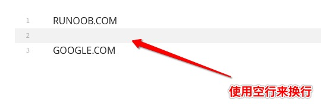
フォント
テキストの強調は文章作成において重要なテクニックです。Markdown は太字と斜体の効果を実現する簡潔な方法を提供します。
Markdown では次のフォントスタイルを使用できます：太字と斜体。
太字の構文：2つのアスタリスクを使用**または2つのアンダースコア__でテキストを囲みます：
这是**粗体文字**使用星号 这是__粗体文字__使用下划线
斜体の構文：1つのアスタリスクを使用*または1つのアンダースコア_でテキストを囲みます：
这是*斜体文字*使用星号 这是_斜体文字_使用下划线
太字と斜体の組み合わせ：3つのアスタリスクを使用***または3つのアンダースコア___。
*斜体文本* _斜体文本_ **粗体文本** __粗体文本__ ***粗斜体文本*** ___粗斜体文本___
表示結果は次のとおりです：
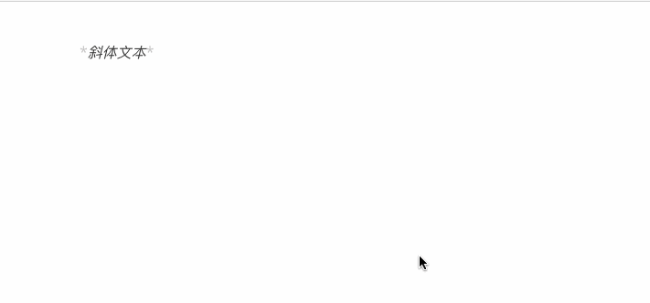
併用テクニック：
この文章は**太字**、*斜体*、***太斜体***の組み合わせ効果を含みます。
レンダリング結果は次のとおりです：
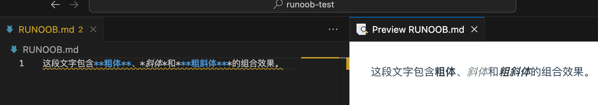
使用上のアドバイス：
- アスタリスクの使用を推奨します
*アンダースコアではなく_アスタリスクはさまざまな Markdown パーサーとの互換性が高いためです - 強調を使いすぎないでください。重点を際立たせてこそ効果があります。
- 中国語と英語が混在する場合は、読みやすさを向上させるために強調記号の前後にスペースを追加することをお勧めします。
区切り線
1行の中で3つ以上のアスタリスク、ハイフン、アンダースコアを使用して区切り線を作成できます。行内に他のものを含めることはできません。また、アスタリスクやハイフンの間にスペースを挿入することもできます。以下のどの書き方でも区切り線を作成できます：
*** * * * ***** - - - ----------
表示結果は次のとおりです：
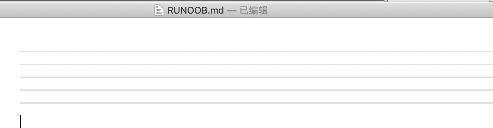
取り消し線
段落のテキストに取り消し線を追加するには、テキストの両端に2つのチルダを追加するだけです。~~それだけでOKです。実例は次のとおりです：
example.com GOOGLE.COM ~~BAIDU.COM~~
表示結果は次のとおりです：
下線
下線は HTML の<u>タグで実現できます：
<u>带下划线文本</u>
表示結果は次のとおりです：
脚注
脚注はテキストの補足説明です。
Markdown の脚注の形式は次のとおりです：
[^注記するテキスト]
以下の例は脚注の使い方を示しています：
创建脚注格式类似这样 [^サンプル]。 [^サンプル]: サンプル -- 学的不仅是技术，更是梦想！！！
表示結果は次のとおりです：
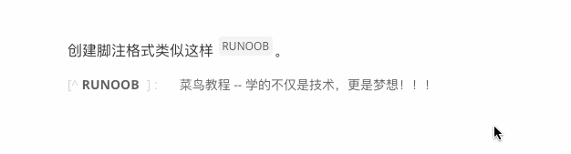
インラインコードマーカー
インラインコードは、本文中でコード断片、コマンド、変数名などをマークするために使用されます：
基本構文：
1つのバッククォートを使用`でコードを囲みます：
使用 `git commit` 命令提交代码 变量 `userName` 存储用户名 在终端中输入 `npm install` 安装依赖
レンダリング結果：
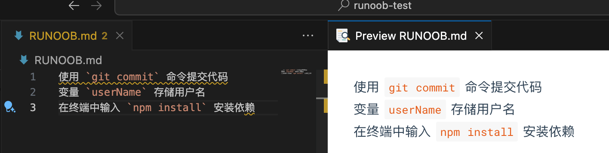
バッククォートを含むコード：コード自体にバッククォートが含まれる場合は、2つのバッククォートで囲みます。
要显示反引号，使用 `` `code` `` 这样的格式
レンダリング結果：
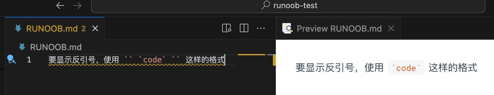
適用シーン：
- 技術ドキュメント内の API 名、関数名
- 設定ファイル内のパラメータ名
- コマンドライン命令
- キーボードショートカット（例：
Ctrl+C）
テキストハイライト（拡張構文）
テキストハイライトは標準の Markdown 構文ではありませんが、多くの拡張機能がサポートしています：
一般的な構文（一部のプラットフォームでサポート）：
これは==ハイライトテキスト==です
HTML による代替方法：
这是<mark>高亮文本</mark>
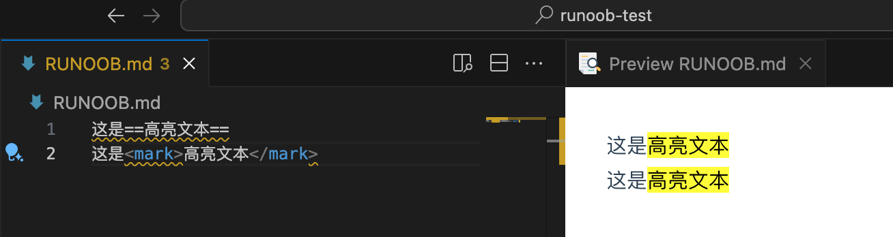
段落と改行
段落の作成方法
Markdown では、段落はテキストの基本単位です。段落のルールを理解することは、文書を正しくフォーマットするために非常に重要です。
段落の基本ルール：
- 段落は1つ以上の連続したテキスト行で構成されます
- 段落間は1つ以上の空行で区切られます
- 通常の段落はスペースやタブでインデントしないでください
正しい段落の書き方：
これは最初の段落です。複数の文を含むことができ、内容は長くなっても自動的に折り返して表示されます。 これは2番目の段落です。上に空行があることに注意してください。 これは3番目の段落です。
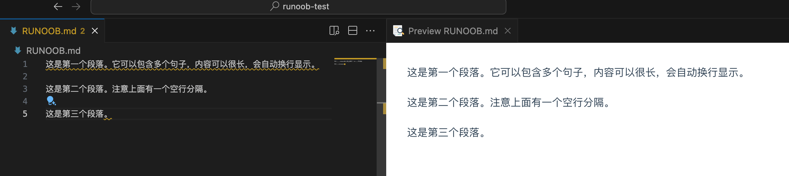
よくある間違い：
これは最初の段落です
これは2番目の段落です（間違い：空行で区切られていない）
これはインデントされた段落です（間違い：インデントすべきではない）
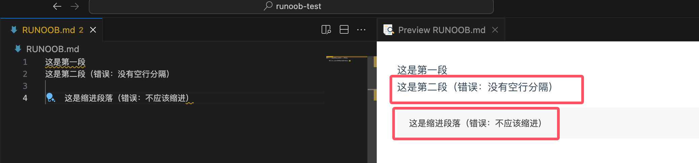
強制改行のテクニック
新しい段落を作成せずに改行したい場合があります。Markdown にはいくつかの方法が用意されています：
方法1：行末に2つのスペース
行末に2つ以上のスペースを追加してから Enter キーを押します：
1行目の内容（ここにスペースが2つあります） 2行目の内容
方法2：HTML の改行タグ
第一行内容<br> 第二行内容
方法3：バックスラッシュ（一部のパーサーでサポート）
1行目の内容\ 2行目の内容
実際の適用例：
地址：北京市朝阳区 电话：010-12345678 邮箱：admin@example.com 诗歌示例： 床前明月光， 疑是地上霜。 举头望明月， 低头思故乡。
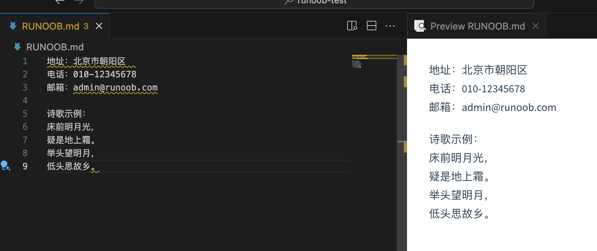
空行の役割
空行は Markdown において重要な役割を果たします：
段落を区切る：
最初の段落の内容 2番目の段落の内容
異なる要素を区切る：
# 标题 段落内容 - 列表项1 - 列表项2 另一段内容
ベストプラクティスの推奨事項：
- 見出しとコンテンツの間に空行を入れる
- リストの前後に空行を入れる
- コードブロックの前後に空行を入れる
- 空行の使用習慣を一貫して保つ